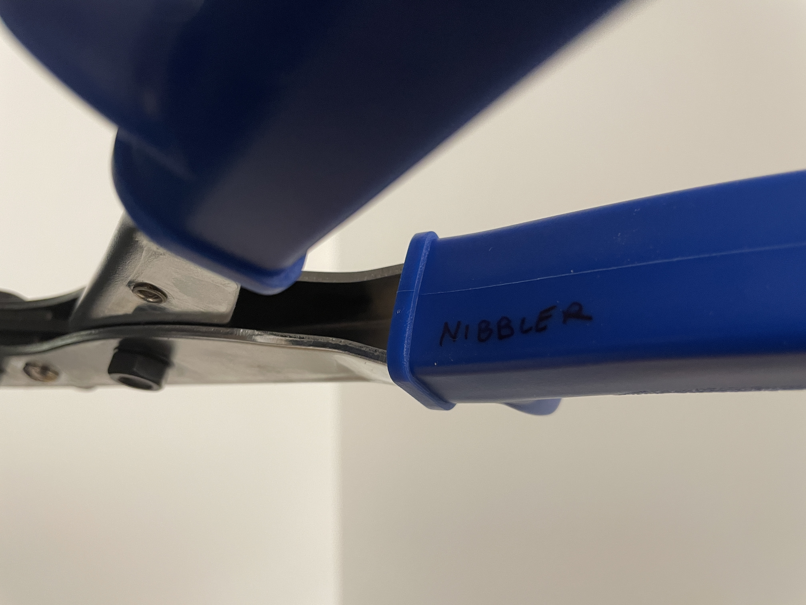

this is a handheld tool that aids in cutting sheet metal.
By pulling the handle, the tool will remove a small amount of sheet metal. The short
increments of each cut reduce the sheet metal warping and allow for curved cuts if desired.

This tool is actually called a 'nibbler'! The name ‘nibbler’ reminds me of eating. What a cute tool! I can imagine it chomping along the sheet metal. I need to double-check the names of my other 2.007 tools — what are aviation snips? What’s the difference between all of these clamps? And yet the name of this tool reminds me of life, the notion of eating. It lingers on the mind.
